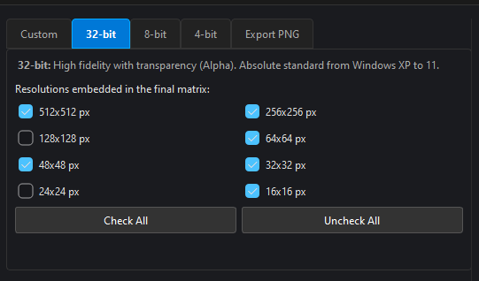
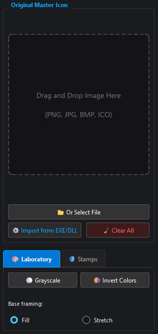
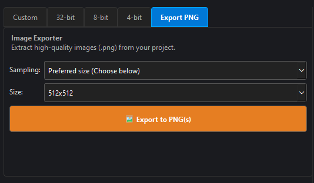
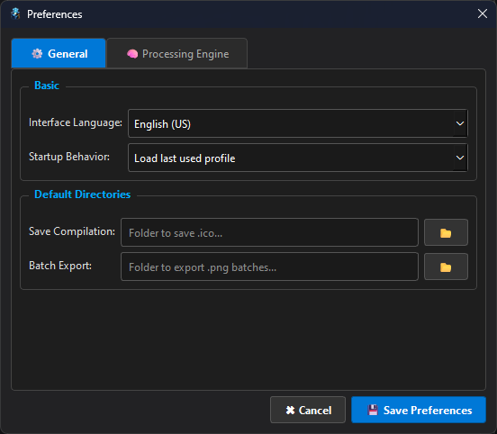
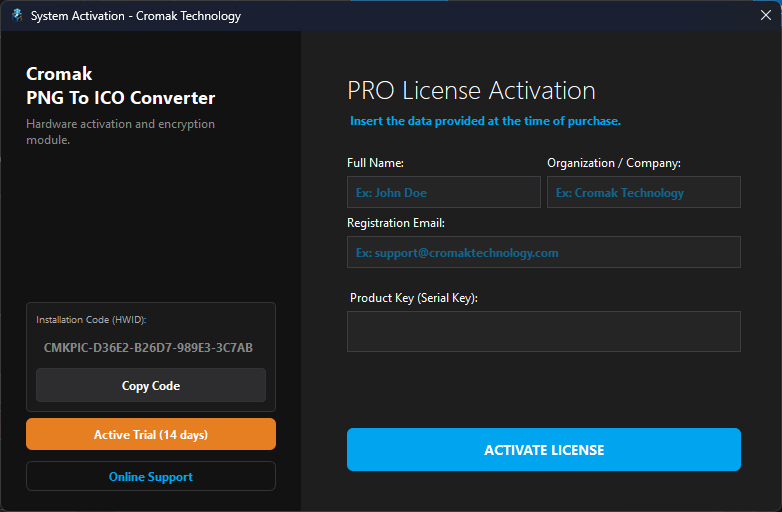

Cromak PNG To ICO Converter
Advanced System for Compilation, Extraction, and Icon Manipulation
Version: 1.3.1 (Build 2026.04)

Professional Rendering Engine
-
Multi-resolution Compilation
Generate true ICO packages with independent matrices ranging from a tiny 16x16 px up to ultra-high fidelity 512x512 px within the same file.
-
Granular Slot Replacement
Have a specific design for one resolution, but a different one for smaller sizes? The Replacement Panel allows loading exclusive matrices for each resolution slot separately.
-
Extreme Compatibility (32, 8, and 4 Bits)
Embraces Windows XP through 11. Produce modern 32-bit matrices (True Color + Alpha), or generate DIBs formatted in 8-bits (256 colors) and 4-bits for legacy software and strict backward compatibility.
-
Native Reverse Engineering
Don't have the original image? The software navigates inside executables (.EXE) and dynamic libraries (.DLL) using Windows Kernel APIs, extracting native icons directly from the PE Header.


Native Internationalization
Designed for studios worldwide. With an ironclad i18n engine, the GUI, compilation logs, and operational panels adapt in real-time.
Operation Gallery
Click on any screenshot to inspect the converter's modules.
Unified Dashboard
Dark Mode interface built in PyQt6, designed for long design sessions without visual fatigue.

Visual Laboratory
Import via Drag & Drop. Apply Smart framing (Fill/Stretch), color filters, and dynamically add Badges (UAC, PRO).
Resolution Profiles (.icv)
Choose exactly which pixels will make it into the final file. Save entire configurations and load them later using custom profiles.

Smart Exporter
Unpack Icons or transform giant images into batches of PNGs at perfectly formatted sizes for Web or Mobile development.

Integrated Console
Track the atomic process of the compiler. View raw byte conversion, algorithm fallbacks, and structure packer validations.
Advanced PE Extractor
Similar to Resource Hacker, read OS libraries to rescue untouched icon sets from RAM.

Rendering Settings
Choose between high-smoothness Lanczos or precision Nearest Neighbor (Pixel Art). Apply Anti-Halo Matting to flawlessly convert transparent alphas into solid backgrounds.

License Security
Hardware activation tied to the processor and motherboard via CMKPIC key, unlocking system functions for a lifetime.
🧠 Hybrid Compression Architecture
The Cromak PNG To ICO Converter uses a smart hybrid engine for space optimization. By enabling the "Compress for Windows 7" option, large matrix resolutions (above 256x256) are preserved using embedded PNG streams without quality loss (lossless).
For icons smaller than 128px and infrastructures limited to 8 and 4-bits, the compiler automatically injects primitive bitmap structures (DIBs) via raw hexadecimal reading, ensuring 100% recognition by older kernels.
Download the Web To Ico Converter
Unlock full access to the Cromak Metadata Remover forensic engines.
Free Plan
- Basic Audio and Video Cleaning
- Multilingual Interface
- Document Scanning Locked
- Image Cleaning Locked
- Military-Grade Wiping Inactive
- No Updates
- No Technical Support
Personal Monthly
- 1 Machine License
- Deep PDF Cleaning (Invisible Ink)
- Active Matryoshka Office Engine
- Physical Destruction (Military-Grade Wiping)
- MAC Times Masking
- Basic Technical Support
- No Version Updates
Personal Annual
- Up to 3 Machine Licenses
- All Forensic Engines Unlocked
- Guaranteed Software Updates
- Priority Technical Support
- Ideal for small offices
- Equivalent to just R$ 2.90/month
🔒 Encrypted Transaction and Immediate Licensing
Your Hardware ID license will be generated immediately after payment confirmation via support.
System Requirements
- Operating System Windows 10, Windows 11 (64-bit)
- Processor Intel Core i3 or AMD Ryzen 3 (AVX Support recommended)
- RAM Memory 4 GB RAM (Dedicated for Pillow load)
- Storage 50 MB for base package installation.
- Video / API Any GPU compatible with PyQt6 (2D Rendering)